01 — Main menu (CRT)
Curved phosphor screen · rounded pill buttons · amber scanline glow.
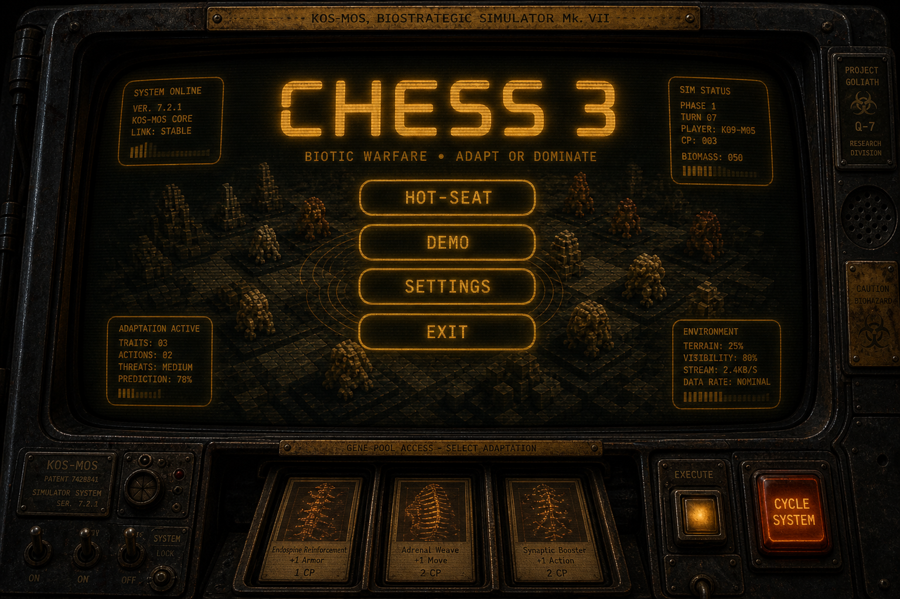
Direction v2: rounded CRT-era terminal (amber phosphor, scanlines, curved bezel). See RESEARCH.md.
Curved phosphor screen · rounded pill buttons · amber scanline glow.

One player at a time · style pills · specimen rack of cartridges · CAPACITANCE gauge · LOCK · PASS TO P2. Not a gene spreadsheet.
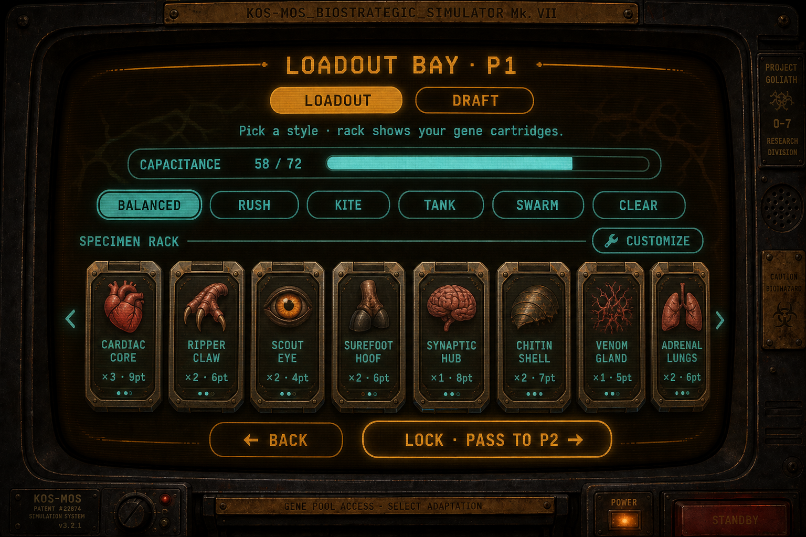
Gene catalog wall — tap tiles to add; rack stays as the loadout truth.
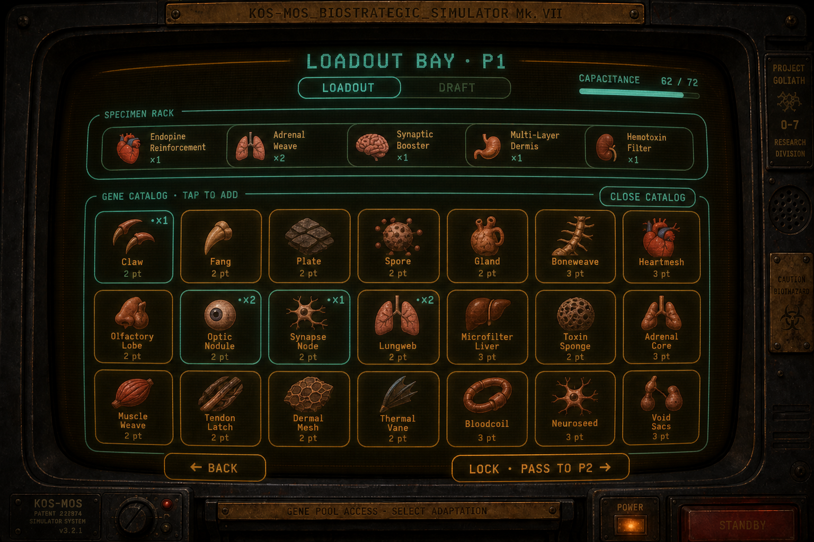
Same screen shell · DRAFT tab · 5-card offer pack (in-match muscle memory) · REROLL · rack fills over picks.
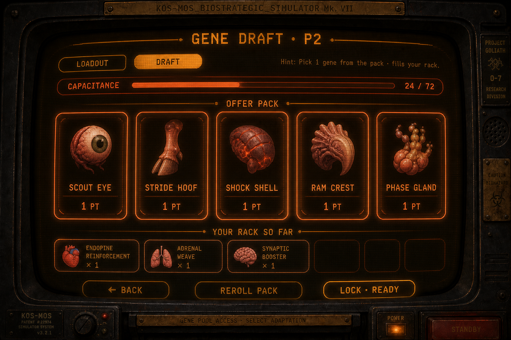
Full-screen CRT overlay after P1 locks — one job: hand the device to P2.
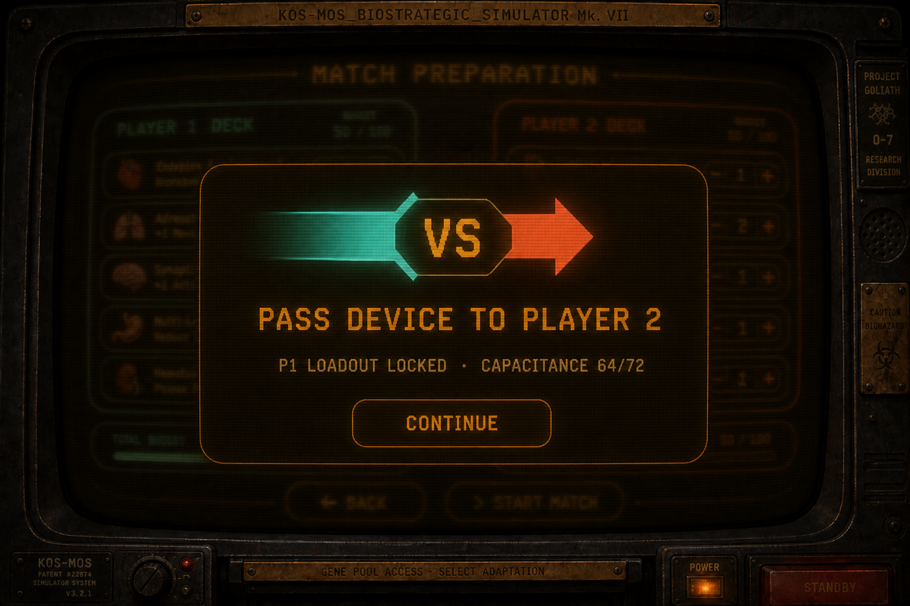
Old dual-column gene rows + steppers — kept for comparison only.
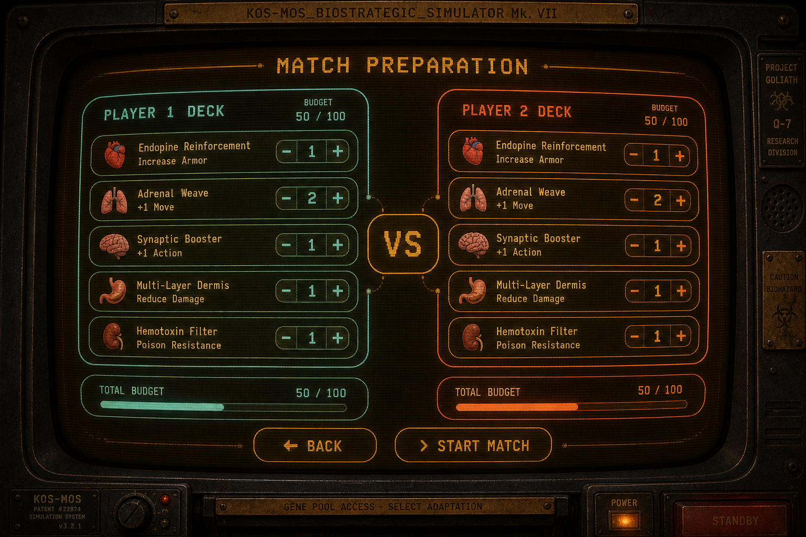
Board-first with rounded tempo overlay on CRT glass.
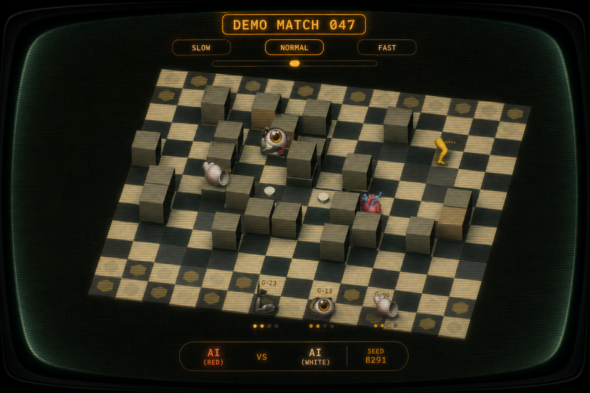
Result card + countdown on rounded terminal sheet.
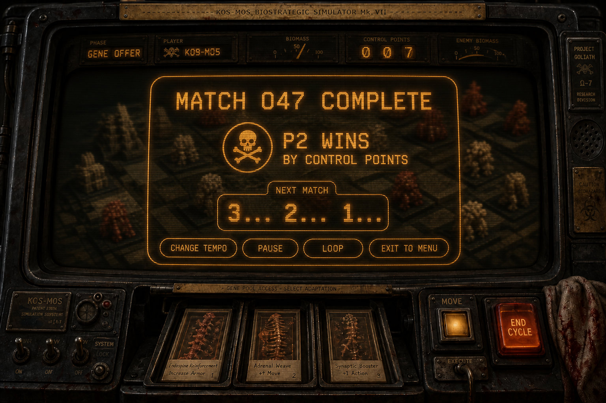
Rounded settings sheet · pill toggles · amber sliders.
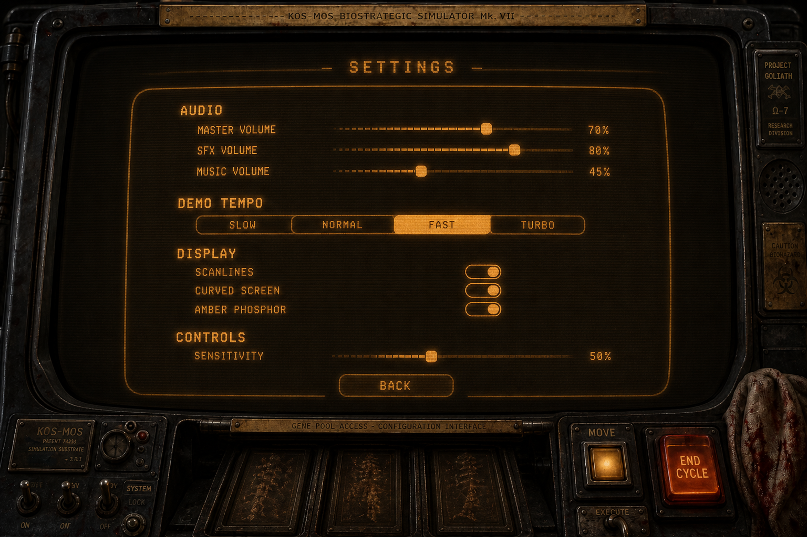
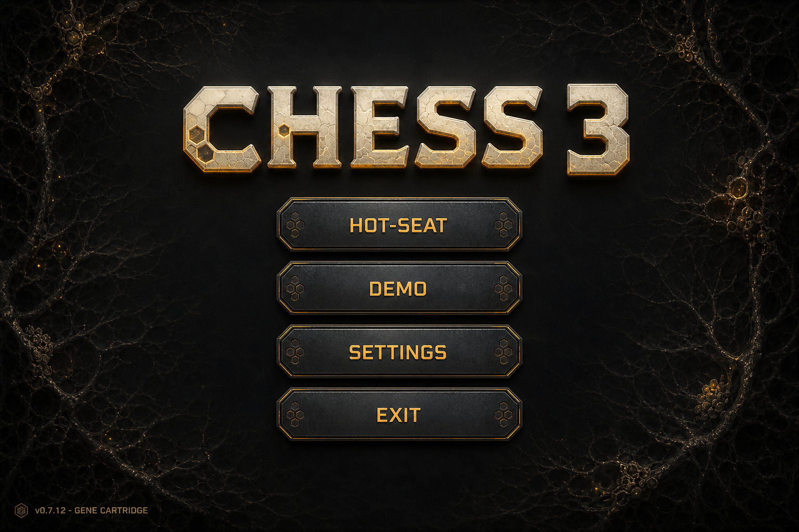
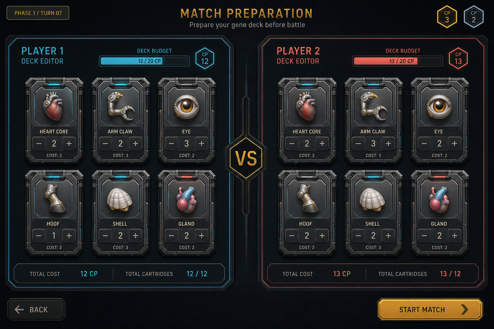
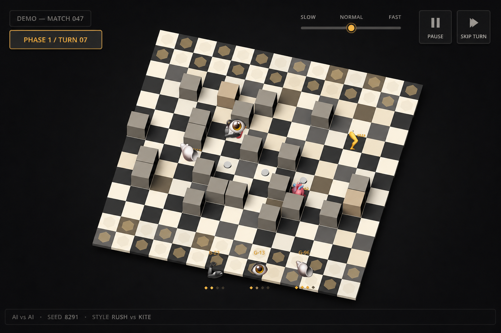
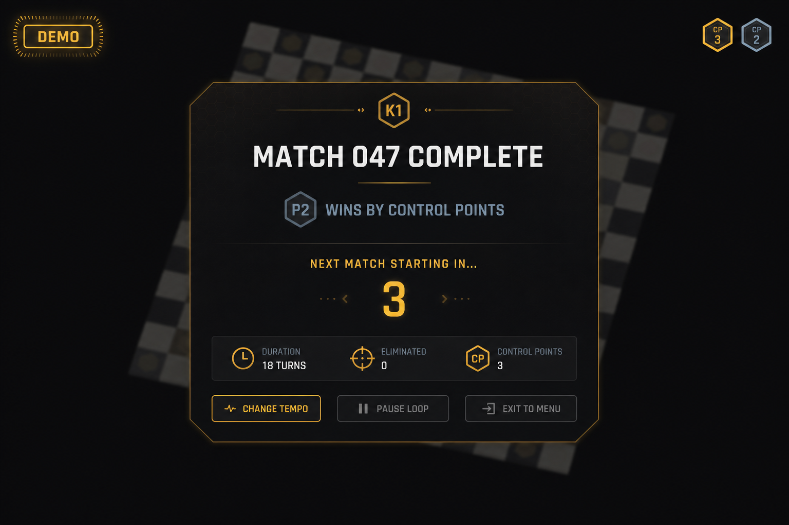
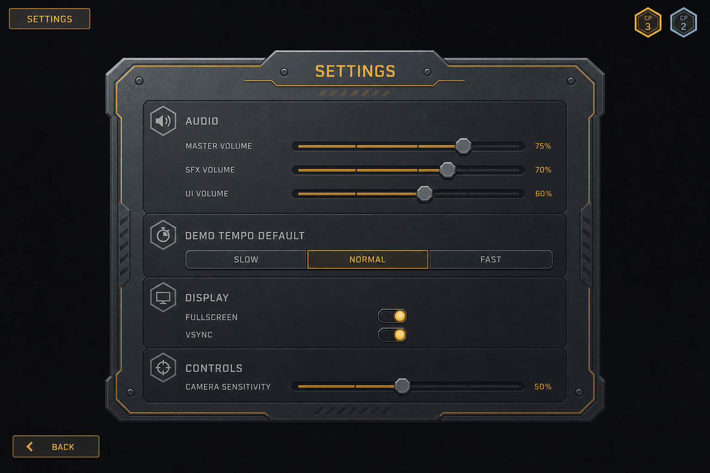